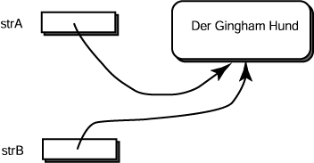

Wie würde sich das Programm ändern, wenn die zweite Anweisung folgendermaßen geändert werden würde:
String str2 = "StringLiteral" ; // kleiner Unterschied
Antwort:
Jetzt, da das zweite Literal nicht mit dem Ersten identisch ist,
werden zwei literale Stringobjekte erzeugt, und
die Variablen str1 und str2 verweisen auf verschiedene
Objekte.
Zwei Strings, die == sind, sind immer equal()
Der == -Operator bestimmt, ob zwei Variablennamen auf dasselbe Objekt verweisen.
Es ist in der realen Welt (und in Programmen) üblich für ein Objekt mehrere Namen zu haben, zum Beispiel "Mark Twain" und "Samuel Clemens" sind zwei Namen für denselben Autor.

Betrachten Sie das Folgende:
String strA = new String ("Der Gingham Hund");
String strB = strA;
- Da es nur ein Objekt gibt, ist
strA == strB
- Da beide Referenzvariablen auf ein Objekt mit denselben Daten zeigen, ist
strA.equals( strB )
Für Strings ist es immer wahr, dass wenn
== wahr ergibt, dann wird equals() auch wahr ergeben.
Aber für andere Objekttypen muss das nicht unbedingt wahr sein.
Zum Beispiel können Sie Ihre eigenen Objekte definieren und Ihr eigenes Verhalten
für deren equals() Methode definieren.
FRAGE 23:
In dem folgenden Code, wird equal() WAHR oder
FALSCH anzeigen?
String lit1 = "ein Stringliteral" ;
String lit2 = "ein Stringliteral" ;
if ( lit1.equals( lit2 ) )
System.out.println("WAHR");
else
System.out.println("FALSCH");